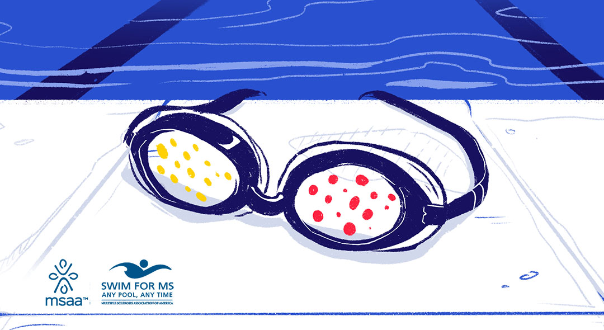

#ADVERTISING - 2019
Building an Empathy-Based Awareness Campaign for MSAA's Swim Fundraiser
Going Beneath the Surface of Multiple Sclerosis
MS is an invisible disease. Rare, and different in every person: Beneath the Surface is a campaign I concepted and directed for the Multiple Sclerosis Association of America, priming young online users to understand MS symptoms through their annual "Swim for MS" fundraising drive.
In working with the Multiple Sclerosis Association of America, we found that they had a history of difficulty reaching a younger audience—which not only resulted in lower turnout for fundraising, but also a dwindling presence on social media. I took on the hats of strategist, copywriter, and art director in order to create a campaign that satisifed both the event collateral goals as well as building an online presence for MSAA's brand.
GoalsAdvertise a compelling fundraising event while also developing a long-term reputation for MSAA as a creative and effective entity in the nonprofit sector
Skills Used
Art Direction
Branding
Animation
Copywriting
Event Organizing
Year Completed2019
What's beneath the surface?
A universal challenge of raising awareness for diseases like MS is that they are difficult to empathize with on a visual level. Symptoms are more beneath the skin, rather than surface-level, so we challenged online users to "dive in" to the reality of the disease.
My research found that MS, while being a physically debilitating disease, can be equally devastating as an ailment that draws little understanding or empathy. Then, my goal was to create a link between this insight and MSAA's Swim for MS fundraiser.

The overall goals of the campaign were to 1.) raise funds for MSAA 2.) develop awareness and understanding of the disease and 3.) build MSAA's social profile. By building an understanding of the disease in our audience, we achieved all 3.